CLASE 1 - GEOFÍSICA DE MEDIOS GRANULARES
¿QUÉ SON LOS MEDIOS
GRANULARES?
THOMAS GALLOT,
CAMILA SEDOFEITO
Instituto de Física,
Facultad de Ciencias,
Universidad de la República
«Un cuerpo es líquido cuando se divide en varias partes más pequeñas que se mueven por separado, y es sólido cuando todas sus partes están en contacto.»
— René Descartes, Principios de la Filosofía (1644)
¿Y si un material cumple ambas condiciones a la vez?
Sobre el curso
- Rol de los medios granulares en sistemas naturales.
- Física de los medios granulares: estática, dinámica (flujo, jamming, etc.) y propagación de ondas.
- Experimentos de laboratorio.
- Procesamiento de datos
4 horas presenciales por semana, durante 15 semanas.
-Informes del curso: 50%
-Presentación oral individual: 50%
Cronograma

Sobre los informes
Cada experimento de laboratorio debe ir acompañado de un informe escrito.
Los informes solo tendrán:
- Figuras (gráficos, esquemas del montaje, fotos)
- Análisis de datos
- Discusión de resultados
Entrega: una semana después de cada experimento. Peso: 50 % de la nota final.
Materiales granulares
Colección de partículas macroscópicas sólidas (granos) que interactúan con sus vecinas principalmente por fricción y colisiones.
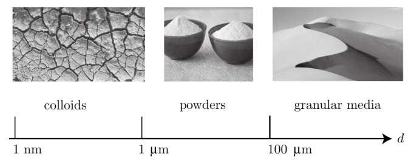
Agitación térmica
Van der Waals
Humedad
Arrastre del aire
Fricción
Colisión
Fuerzas de contacto según la escala
La física dominante cambia radicalmente con el tamaño de las partículas:
$d < 100\,\mu$m
Polvos
- Agitación térmica (browniana)
- Van der Waals
- Fuerzas capilares
- Cargas electrostáticas
$100\,\mu$m – $1\,$mm
Arenas finas / polvos gruesos
- Arrastre viscoso del aire
- Arrastre turbulento
- Humedad residual
- Fricción (incipiente)
$d > 1\,$mm
Granos
- Fricción sólida (Coulomb)
- Colisiones inelásticas
- Gravedad dominante
- Stick-slip
Duran, Sands, Powders, and Grains, Cap. 2
Escala coloidal: $d < 100\,\mu\text{m}$ — Polvos
Agitación térmica: para $d \sim 1\,\mu$m, la energía cinética térmica $k_B T$ es comparable a la energía potencial gravitatoria $mgd$. El movimiento browniano puede mover las partículas.
Fuerzas de Van der Waals: atracción entre dipolos inducidos a distancias nanométricas. Dominante para partículas muy finas en contacto íntimo.
Fuerzas capilares (humedad): un puente líquido entre dos esferas genera una fuerza de atracción:
donde $\gamma_{lv}$ es la tensión superficial y $r_1$, $r_2$ los radios del menisco.
Cargas electrostáticas: la fricción o las colisiones generan cargas superficiales ($\sim 4 \times 10^{-8}$ C/cm²) que producen interacciones de largo alcance.
Radio crítico capilar:
Para esferas de vidrio en agua: $R \sim 1$ mm ($\alpha = 1$), pero basta una humedad modesta ($\alpha = 0.01$) para que $R \sim 100\,\mu$m.
Consecuencia: los polvos finos son cohesivos — se aglomeran, forman grumos, y se adhieren a las paredes. Su comportamiento es radicalmente diferente al de los granos.
Duran, Sands, Powders, and Grains, Sec. 2.1, p.24–26
Escala intermedia: $100\,\mu\text{m} < d < 1\,\text{mm}$
Arrastre aerodinámico: una partícula de radio $R$ moviéndose a velocidad $v$ en un fluido de viscosidad $\eta$ experimenta una fuerza de arrastre. Se define el parámetro:
Si $R_l \gg 1$: régimen granular seco (fricción domina).
Si $R_l \lesssim 10$: la viscosidad del aire no es despreciable.
Ejemplo:
- Arena de sílice, $d = 1$ mm, $v = 1$ cm/s: $R_l \sim 10^4$ → granular seco
- Polvo de licopodio, $d = 10\,\mu$m: $R_l$ disminuye proporcionalmente → el aire importa
Arrastre turbulento: a velocidades más altas, la fuerza depende del cuadrado de la velocidad:
con $k_t \approx 0.24$ para una esfera.
Zona de transición: en esta escala compiten simultáneamente:
- Fuerzas capilares (humedad residual)
- Arrastre viscoso del aire
- Fricción sólida (incipiente)
El comportamiento depende fuertemente de las condiciones experimentales.
Duran, Sands, Powders, and Grains, Sec. 2.1, p.20–23
Escala granular: $d > 1\,\text{mm}$ — Granos
Fricción sólida (leyes de Coulomb):
- La fuerza tangencial $T$ es proporcional a la carga normal $P$
- Independiente del área de contacto aparente
- $\mu_s$ (estática) $\geq$ $\mu_d$ (dinámica): $\mu \approx 0.7$ (rocas), $\approx 1$ (metales)
Origen microscópico: las asperezas de la superficie ($\sim 1\,\mu$m) se deforman plásticamente bajo la carga normal. El coeficiente $\mu_s = s/p$ donde $s$ y $p$ son constantes del material.
Colisiones inelásticas:
$\varepsilon$: coeficiente de restitución ($0 \leq \varepsilon \leq 1$). Disipación por ondas acústicas internas y deformación permanente.
Aproximación "granular seco":
Para $d > 1$ mm en aire: $R_l \sim 10^4$, $R_t \sim 10^3$.
La gravedad domina, las interacciones se reducen a fricción + colisiones. Es el régimen que estudiaremos en este curso.
Duran, Sands, Powders, and Grains, Sec. 2.2, p.27–35
¿Por qué no importa la temperatura?
Un grano de arena de sílice ($d \sim 1$ mm) moviéndose a $v \sim 1$ cm/s:
$E_k = \tfrac{1}{2}mv^2 \approx 10^{-12}$ J
Si esta energía cinética fuera de origen térmico ($E_k = k_B T$):
$T \sim 10^{11}$ K
Duran, Sands, Powders, and Grains, Sec. 1.1
Materiales granulares en la industria
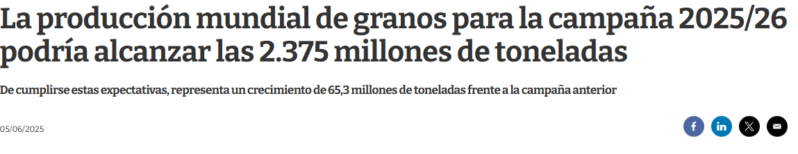
2.375.000.000.000 de kg
Cerca del 40 % de la capacidad de las plantas industriales es desperdiciada
Soja ~2.5 Mt | Arroz ~1.3 Mt | Trigo ~1 Mt | Cebada ~0.5 Mt | Maíz ~0.5 Mt
Holdich, R. (2020). Fundamentals of particle technology. MidlandIT. / REOPINAGRA-MGAP.
Materiales granulares en la industria
- Agricultura: procesamiento, almacenamiento, transporte
- Construcción: extracción, transporte, trituración, molienda, tamizado, almacenamiento
- Farmacia: segregación
- Alimentos: empaque, dosificación, transporte
¿Por qué nos interesa a nosotres?
GEOFÍSICA
sismos, avalanchas, fricción
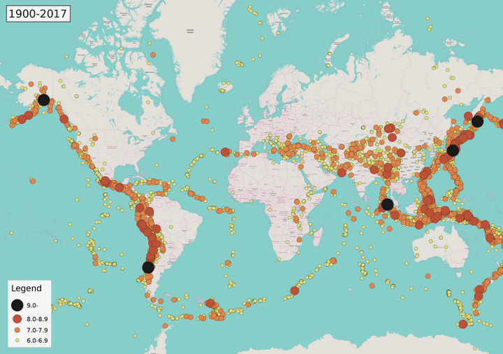
Sismicidad mundial 1900–2017
ASTROFÍSICA
asteroides, protección terrestre

¿Por qué nos interesa? (Geofísica)
- Fricción tectónica y sismos
- Deslizamiento de tierra, caída de acantilados
- Avalanchas
- Propagación de ondas sísmicas en medios no consolidados
- Astrofísica: asteroides como medios granulares (conglomerados mantenidos por autogravedad)
- Leyes de escala de cráteres → formación y evolución del Sistema Solar
- Exploración espacial, protección terrestre
¿Sólidos? ¿Líquidos? ¿Gases?
"Depending on the way it is handled, a granular material can behave like a solid, a liquid or a gas" — Jaeger, Nagel & Behringer (1996)
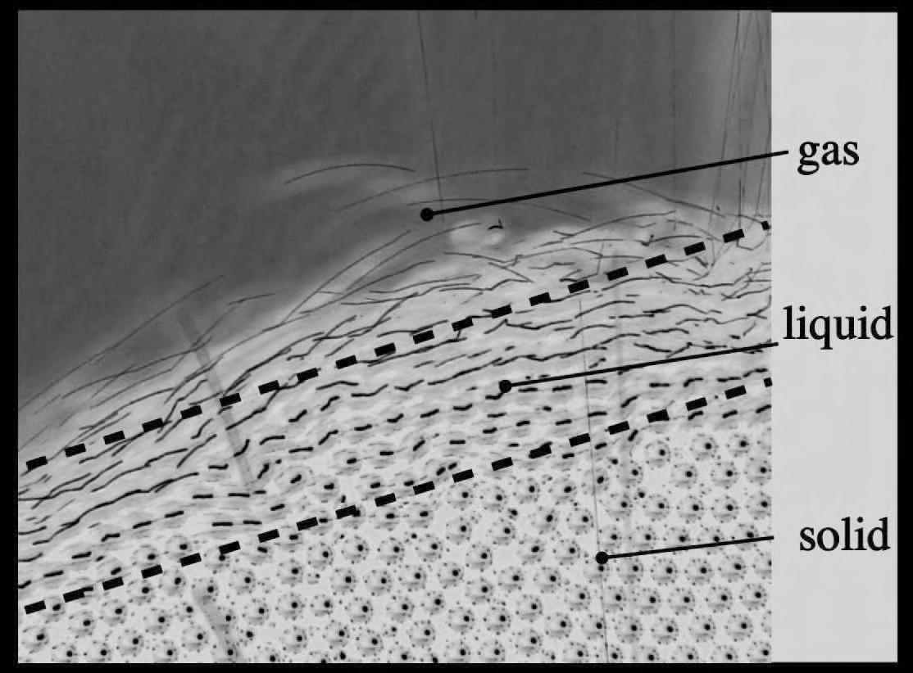
AFP, Granular Media (2013), Fig. 1.4
Sólido
Pila estática, silos, arcos, cadenas de fuerzaLíquido
Reloj de arena, avalanchas, flujo en tambor, ondas de superficieGas
Granos vibrados, anillos de Saturno, flujos piroclásticos, saltaciónSegregación
Competencia entre densidad (pesado abajo) y tamaño (pequeño abajo)
¿Flujo o arco?
Atasco de harina
Un ejemplo cotidiano de jamming: la harina forma arcos cohesivos que bloquean el flujo.
Ciclo sísmico: acumulación de estrés
Corteza: 5 km (oceánica) – 70 km (continental)
Manto: ~2 900 km, convección lenta
Núcleo ext.: ~2 200 km, líquido (Fe-Ni)
Núcleo int.: ~1 220 km de radio, sólido
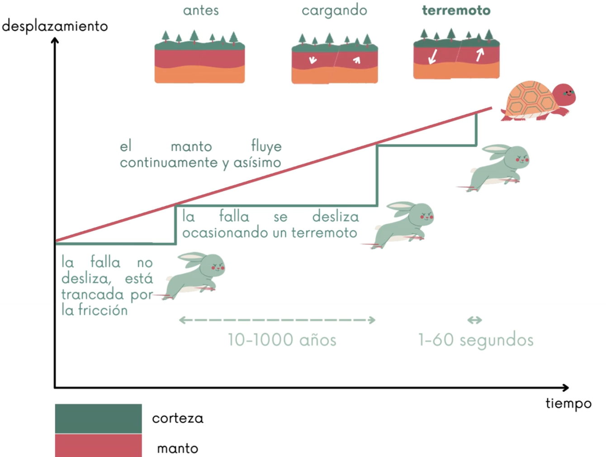
El manto fluye continuamente y de forma asísmica. La falla no desliza: está trancada por la fricción. El estrés se acumula hasta que la falla se desliza → terremoto.
Profundidad de los terremotos: Superficiales: < 70 km (mayoría, ~75%) | Intermedios: 70–300 km | Profundos: 300–700 km (máx. ~720 km)
Un terremoto en vivo
Escala de Richter
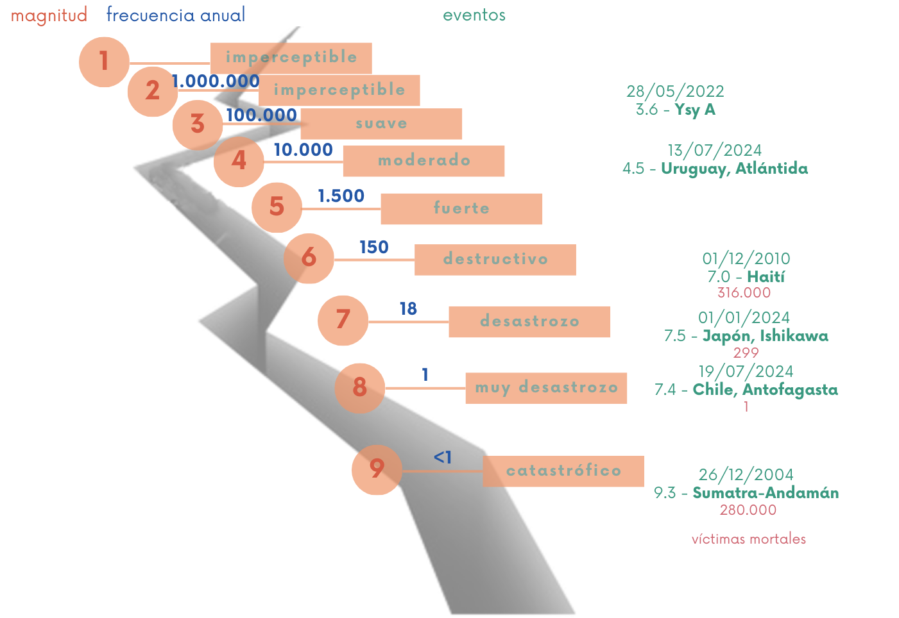
Banco de fricción: terremotos a escala de laboratorio
¿Existe una conexión entre la física de eventos a escala de laboratorio y los procesos a escala terrestre?
9.214 puntos por cm$^2$
$-11 < M_w < -7$
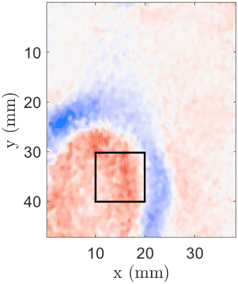
Latour et al., 2011, 2013; Aichele et al., 2019, 2020, 2023
18 estaciones en 176.215 km$^2$
$M_w = 4.5$
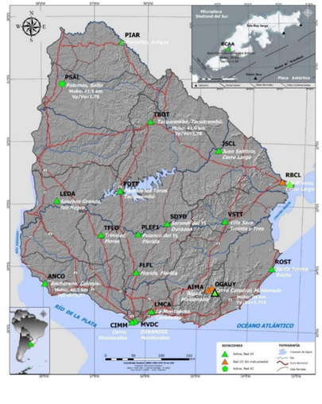
Efecto nueces de Brasil
Cadenas de fuerza
Cadenas de fuerza en medios granulares (1:47–1:50)
Breve historia: física granular y sismología
Física granular
| Época | Autor | Contribución |
|---|---|---|
| 55 a.C. | Lucrecio | Semillas fluyen como agua |
| ~1500 | Da Vinci | Exp. fricción sólida |
| 1773 | Coulomb | Leyes de fricción seca |
| 1831 | Faraday | Pilas de arena vibrantes |
| 1885 | Reynolds | Dilatancia |
| 1895 | Janssen | Presión en silos |
| 1940–70 | Bagnold | Arenas del desierto |
| 1983 | Nesterenko | Solitones granulares |
Sismología
| Época | Hito |
|---|---|
| 780 a.C. | Primer registro escrito (China) |
| 132 d.C. | Zhang Heng: primer sismoscopio |
| 1755 | Terremoto de Lisboa |
| 1841 | Forbes: primer sismómetro |
| 1889 | Primer sismograma a distancia |
| 1935 | Richter: escala de magnitud |
| 1960 | Chile M 9.5, el mayor registrado |
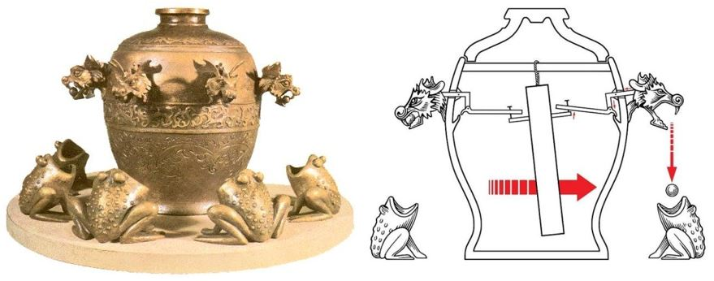
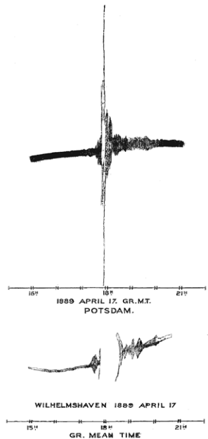
Duran, Sands, Powders, and Grains (2000); Agnew, History of Seismology (2002)
Ripples: Tierra y Marte
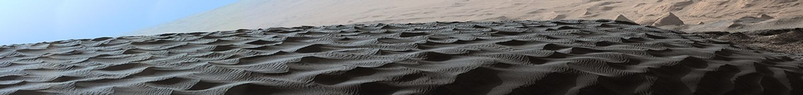
Curiosity rover, Namib Dune, Marte (2015). NASA/JPL-Caltech/MSSS

HiRISE, Mars Reconnaissance Orbiter. NASA/JPL-Caltech/U. of Arizona
Próxima clase
Semanas 2-3: Descripción estructural
- Ángulo de reposo y densidad aparente
- Compacidad y número de coordinación
- Descarga de silos, jamming
Bibliografía: J. Duran, Sands, Powders, and Grains (Springer, 2000) — Capítulos 1-2